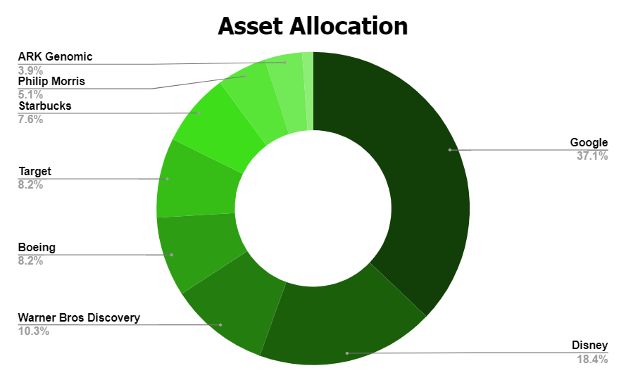

Reason I Own Google
Inspired by Warren Buffett's motto of buying great companies at fair prices, my investment strategy prioritizes quality over quantity. I believe in holding exceptional businesses for the long term. I am trying to build a portfolio for a lifetime. I only purchase companies I plan to hold for my entire life. This "never sell" approach demands meticulous selection, ensuring I'm fully confident in each holding's long-term potential.
Durability is paramount in my analysis. I ask myself, "If I were in a coma for 100 years, would this company still thrive?" This naturally leads me towards strong brands with established consumer loyalty and enduring business models. Think of Starbucks' or McDonalds' enduring appeal. If I woke up in the year 21XX I would be shocked if these companies were not still around paying dividends to their shareholders.
A vital filter I use is pricing power. Great brands aren't just beloved, they also command control over their pricing, creating a "moat" against competition and ensuring consistent profitability. Imagine Apple's ability to charge premium prices for its innovative products.
Beyond brand strength and pricing power, I also value companies with robust barriers to entry. These barriers make it difficult for new competitors to enter the market, protecting existing players from price wars and ensuring long-term profitability. A prime example is Boeing, the aerospace giant. Not only does Boeing boast a strong brand with loyal customers like airlines and governments, but it also faces significant barriers to entry. Building the massive manufacturing facilities and securing certifications from the FAA are formidable hurdles for any potential competitor. This creates a "moat" around Boeing's business, allowing it to command premium prices and maintain steady profits even in challenging economic environments. By including companies like Boeing in my portfolio, I gain exposure to industries with limited competition, potentially boosting my overall returns and reducing risk.
Having a deep understanding of the companies I own is a core principle of my investment strategy. This doesn't limit me to just a few sectors, but it does mean I avoid venturing into industries where I lack understanding. Take semiconductors, for example. While their potential is undeniable, the technical complexities and rapid advancements are beyond my current knowledge base. Instead, I focus on industries and companies I can readily grasp. I watch YouTube and use Google daily, experiencing their products firsthand. Understanding their value proposition and witnessing their consistent billions in profit and balance sheets with over a $100 billion in cash gives me confidence in their long-term prospects. So, when their stock prices dipped in late 2022 and early 2023, it felt like a common-sense buying opportunity based on my familiarity with their business models and future potential.
I embrace contrarianism. When markets panic and undervalue strong companies, I see an opportunity. I believe in being "greedy when others are fearful," like buying into a beloved brand during an industry or economic downturn. This approach allows me to acquire exceptional businesses at attractive prices, setting myself up for long-term success.
The "Becky portfolio" strategy is an investment approach that focuses on companies popular with young, affluent women, often nicknamed "Becky." Here's what you need to know:
This strategy makes a lot of sense to me because I am very reluctant to spend money on myself or if I do I am very price conscious and I make sure my purchase is thought out. However, when I buy for my girlfriend I just buy. I don't look for deals she points and I usually just buy. This gives brands that appeal to these young women an advantage because for each customer they have two incomes. Because the boyfriend will likely pay more of the bills and spend a decent chunk of the remaining money on items for his partner. The woman will also likely have more money to spend on these items because they typically spend less on bills so have more left over. Obviously this does not apply to everyone, but is a pattern you can see if you look.
The concept gained traction after a study showed impressive hypothetical returns for a "Becky" portfolio compared to the S&P 500.
While I aspire to diversify with more great brands, my youth allows me to focus on fewer, carefully chosen holdings for now. I avoid buying solely for diversification, prioritizing conviction over mere portfolio balance. Case in point: Google. When it traded at a price I deemed attractive, I invested heavily in my Roth IRA, even if it meant exceeding its one-third portfolio limit. Over time, as I invest in other compelling businesses, Google's relative weight will naturally decrease. Below is a pie chart displaying the current make up of my portfolio.

Reason I Own Google

Reason I Own Boeing

Reason I Own Starbucks

Reason I Own Target
Reason I Own Philip Morris

Reason I Own Ark Genomic ETF

Reason I Own Clorox